Which is NOT one of the three primary uses of architecture documentation?
- Marketing the product
- Education
- Communication among stakeholders
- Analysis
Show answer
A. Marketing the product
An architecture only helps if the people who need it know it, understand it and apply it correctly, so communicating it is as important as creating it. Documenting an architecture means choosing the relevant views (4+1, Siemens, SCR…) for the stakeholders’ concerns, documenting each view (primary presentation, element catalog, context diagram, variability guide, background), and documenting what spans the views (roadmap, overview, mappings, rationale, directory), usually following a template such as RUP or SEI and keeping only the minimum information needed.
Education (introducing people), communication (among stakeholders), analysis (assuring quality attributes).
Select the views, define the stakeholders, identify their concerns, choose what and how to document (a template).
Primary presentation, element catalog, context diagram, variability guide, architecture background.
Documentation roadmap, view documentation, system overview, mapping between views, rationale, directory.
Final 252 Q8 took two 1-mark questions from this chapter: name two documentation templates (RUP and SEI), and list the major necessary information in an architecture document (problem description, context, rationale, principles and guidelines, structure, views, quality attributes).
Every original slide is shown unchanged. Yellow marks on a slide point to a numbered note: hover or tap a mark to jump to its note, and hover a note to see its marks. Questions tagged Past exam appeared on a real paper; Prediction questions are likely angles, not confirmed.
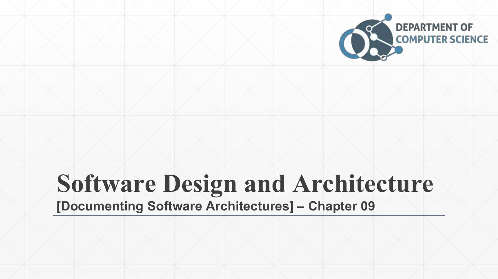
The final chapter: documenting the architecture, one of the architect’s key tasks from Chapter 2 and the fourth step of the architecture process.
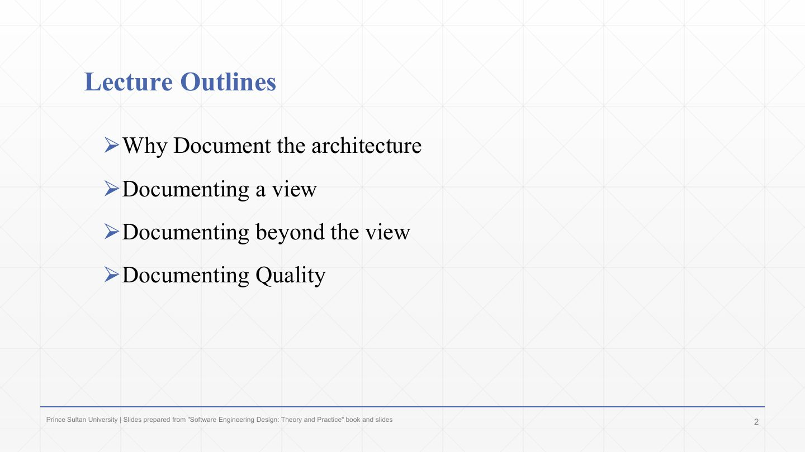
Why document at all.
How to document one view.
What to document beyond the individual views.
How to document quality attributes.
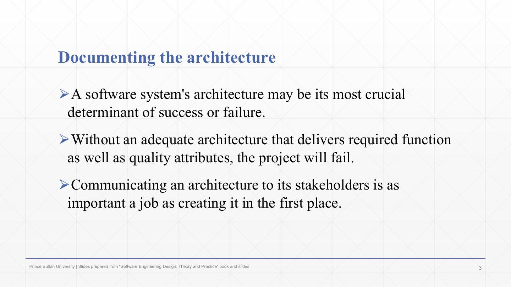
A system’s architecture may be its most crucial determinant of success or failure.
Without an adequate architecture that delivers the required functions and quality attributes, the project will fail.
Communicating the architecture to its stakeholders is as important as creating it in the first place.
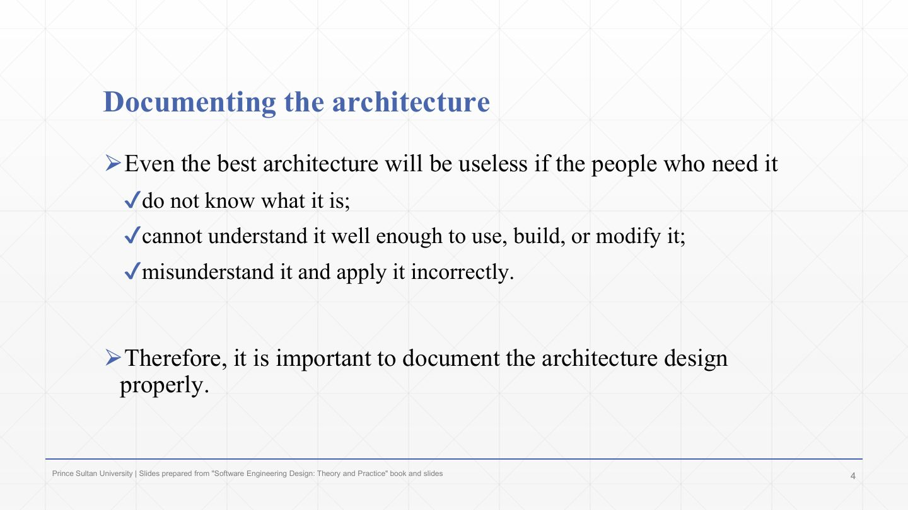
Even the best architecture is useless if the people who need it don’t know what it is…
…can’t understand it well enough to use, build or modify it…
…or misunderstand it and apply it incorrectly.
So the architecture must be documented properly.
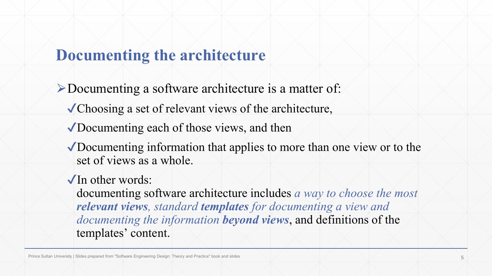
Documenting an architecture means three things. Choose a set of relevant views (Chapter 2: no single view is enough).
Document each of those views.
Document information that applies to more than one view, or to the set as a whole.
In other words: a way to choose the views, standard templates for documenting a view and what lies beyond the views, and definitions of what goes in each template section.
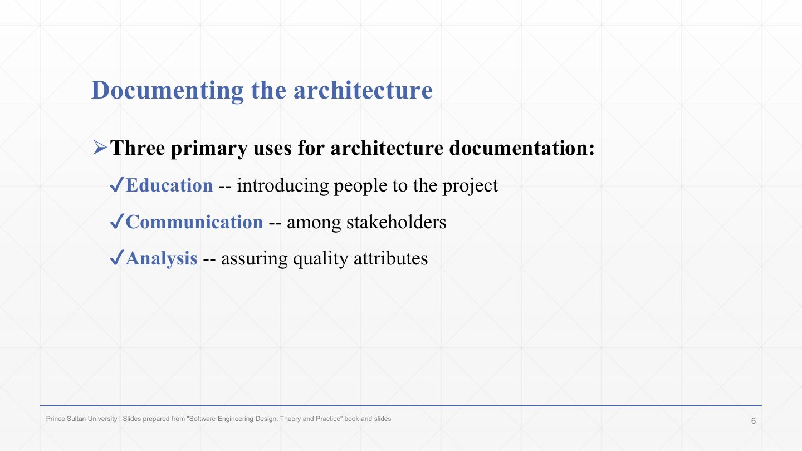
Education: introducing people (new team members, external analysts) to the project.
Communication among stakeholders: the documentation is the shared reference for discussions and decisions.
Analysis: assuring the quality attributes, e.g. as the input to an ATAM evaluation (Chapter 8).
Which is NOT one of the three primary uses of architecture documentation?
A. Marketing the product
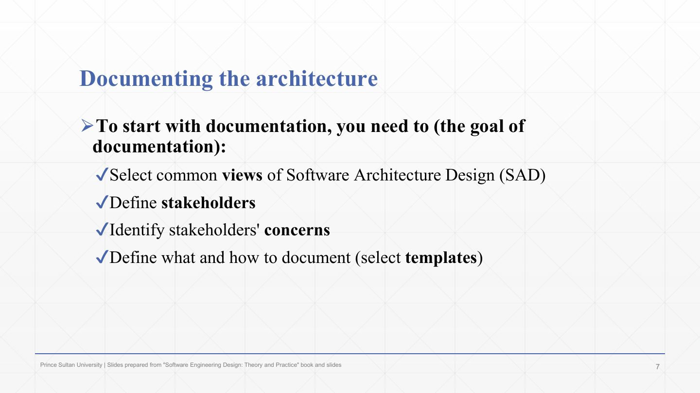
To start, select the common views for the Software Architecture Document (SAD).
Define the stakeholders (slide 12).
Identify the stakeholders’ concerns (slide 13).
Define what and how to document, i.e. select templates (slides 14–16).
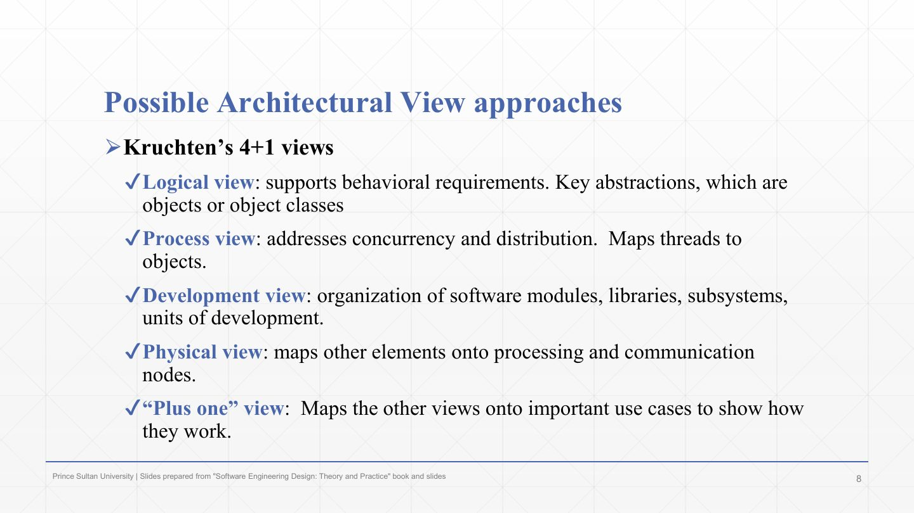
Several view sets exist. The first is Kruchten’s 4+1 (Chapter 2, Lecture 3).
Logical (behavioural requirements: key abstractions as objects or classes), process (concurrency and distribution: threads mapped to objects), development (modules, libraries, subsystems), physical (elements mapped onto processing and communication nodes).
The “plus one” view maps the other four onto important use cases to show how they work together.
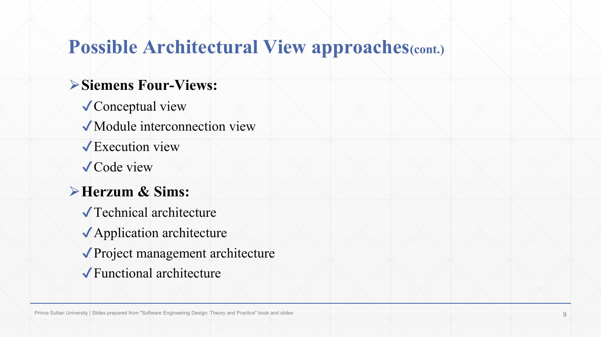
Siemens four views: conceptual, module interconnection, execution and code.
Herzum & Sims: technical, application, project-management and functional architectures. Different view sets organise the same system for different purposes.
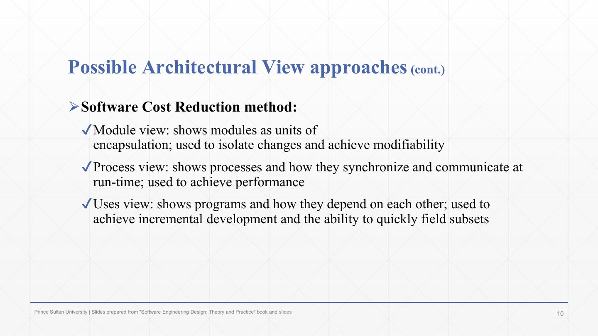
The Software Cost Reduction (SCR) method chooses each view for the quality it supports.
Module view: modules as units of encapsulation, to isolate changes (modifiability). Process view: processes and how they synchronise and communicate at run time (performance).
Uses view: programs and how they depend on each other, to support incremental development and fielding subsets quickly.
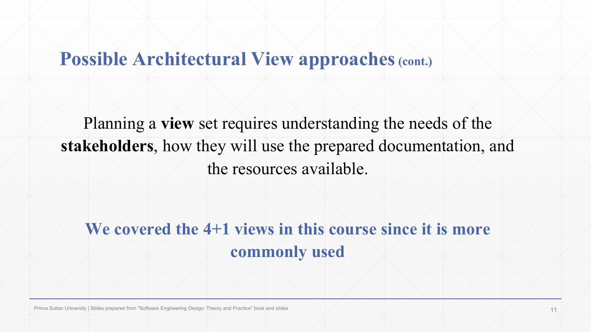
Planning a view set requires understanding the stakeholders’ needs, how they will use the documentation, and the resources available.
This course used the 4+1 views because they are the most common.
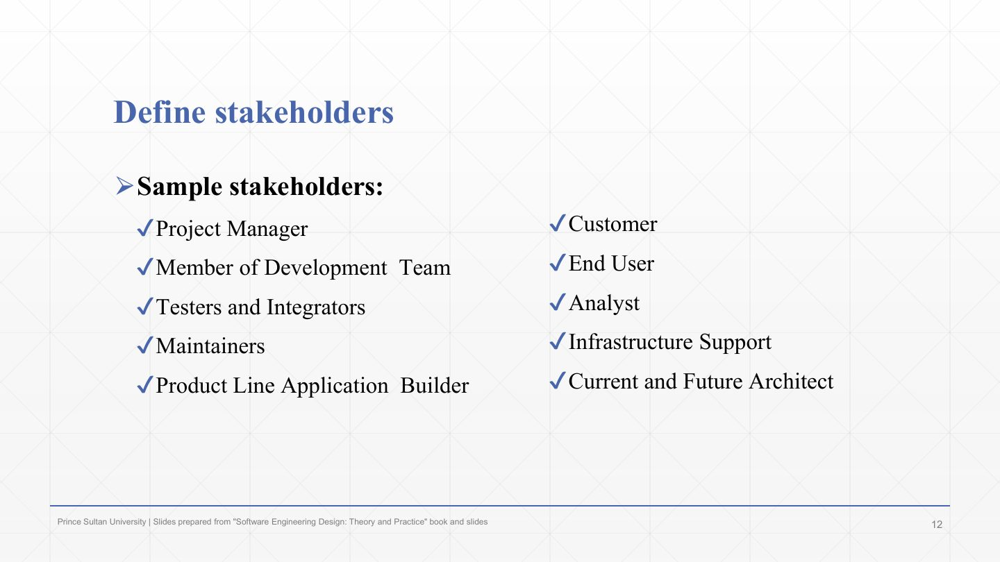
Sample stakeholders of the documentation: customer, project manager, end user, development-team members, analysts.
Testers and integrators, infrastructure support, maintainers.
Current and future architects, and product-line application builders. Each needs different information, which is why the views are chosen per stakeholder.
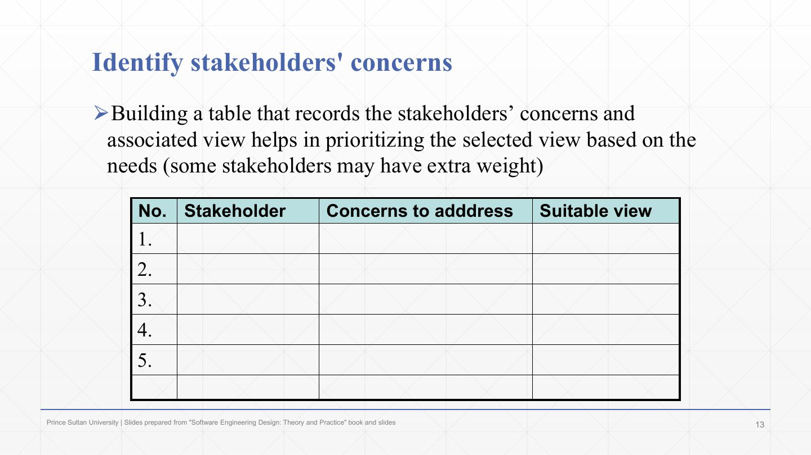
Build a table that records each stakeholder, their concerns, and the view that addresses them.
It helps prioritise the views by need (some stakeholders carry more weight), and it exposes gaps: a concern with no suitable view means the documentation can’t answer it.
Example row: maintainer → “where do I change the tax rules?” → development view.
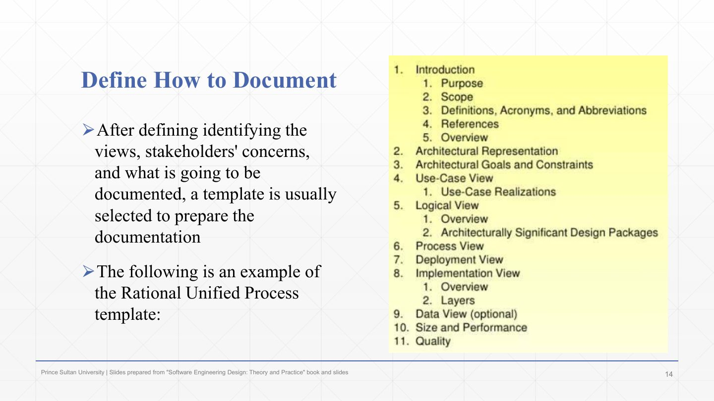
After choosing views, stakeholders, concerns and content, a template is selected to prepare the documentation.
Example: the Rational Unified Process (RUP) SAD template.
Its sections: 1 Introduction (purpose, scope, definitions, references, overview); 2 Architectural representation; 3 Architectural goals and constraints; 4 Use-case view; 5 Logical view; 6 Process view; 7 Deployment view; 8 Implementation view; 9 Data view (optional); 10 Size and performance; 11 Quality. Sections 4–8 are the 4+1 views.
State two types of document templates that can be used to document the architecture.
RUP (Rational Unified Process) template: introduction, architectural representation, goals and constraints, use-case, logical, process, deployment, implementation and data views, size and performance, quality. SEI (Software Engineering Institute) template: documentation roadmap, stakeholder representation, viewpoint definitions, architecture background, views, directory.
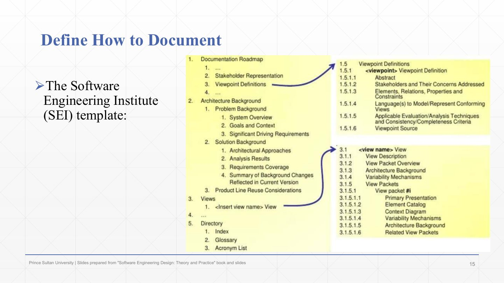
The Software Engineering Institute (SEI) template (“Views and Beyond”).
Its sections: 1 Documentation roadmap (stakeholder representation, viewpoint definitions); 2 Architecture background (problem background, solution background with approaches, analysis results, requirements coverage); 3 Views, each documented as view packets with primary presentation, element catalog, context diagram, variability mechanisms and architecture background.
5 Directory: index, glossary, acronym list. It mirrors slides 17–22 almost section for section.
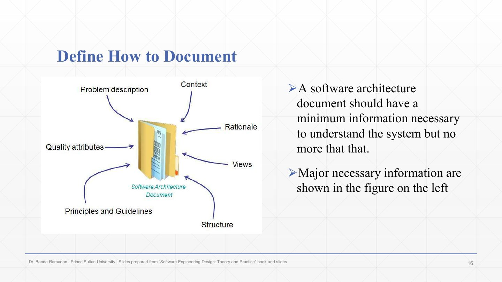
A software architecture document should contain the minimum information necessary to understand the system, and no more. Every extra page is something to keep up to date.
The major necessary information (the figure): problem description, context, rationale, views, structure, principles and guidelines, quality attributes.
A software architecture document should have the minimum information necessary to understand the system but no more. What is the major necessary information to document?
Problem description · context · rationale · principles and guidelines · structure · views · quality attributes.
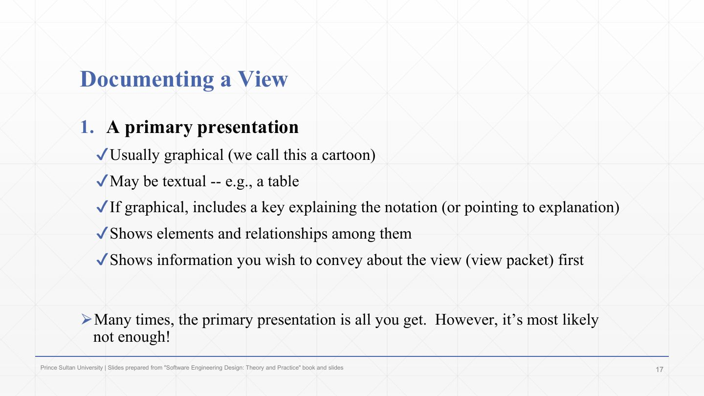
Documenting one view, part 1: the primary presentation, the main picture of the view.
It is usually graphical (informally a “cartoon”), but may be textual, such as a table.
If graphical, it includes a key explaining the notation, shows the elements and their relationships, and shows the most important information about the view first.
Often the primary presentation is all that gets written, but it is most likely not enough: boxes and lines without explanation are ambiguous. Hence parts 2–5.
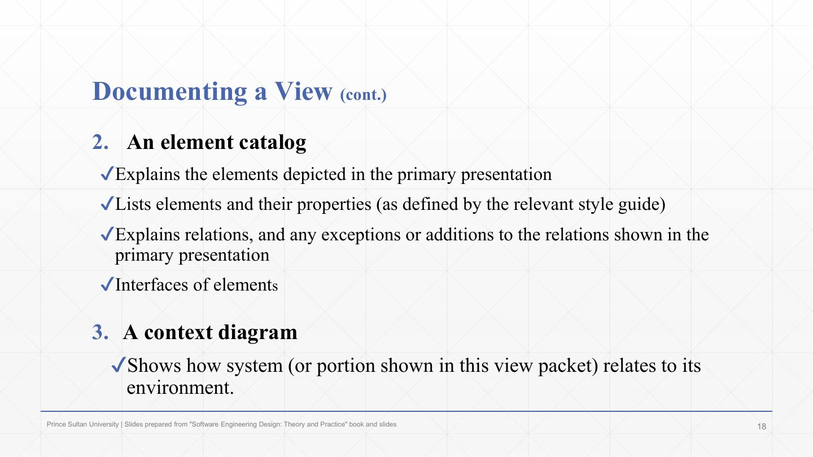
Part 2, the element catalog: explains each element in the primary presentation, lists elements and their properties, explains the relations (and any exceptions or additions to those shown), and gives the elements’ interfaces.
Part 3, the context diagram: shows how the system (or the part shown in this view) relates to its environment: users, external systems, hardware.
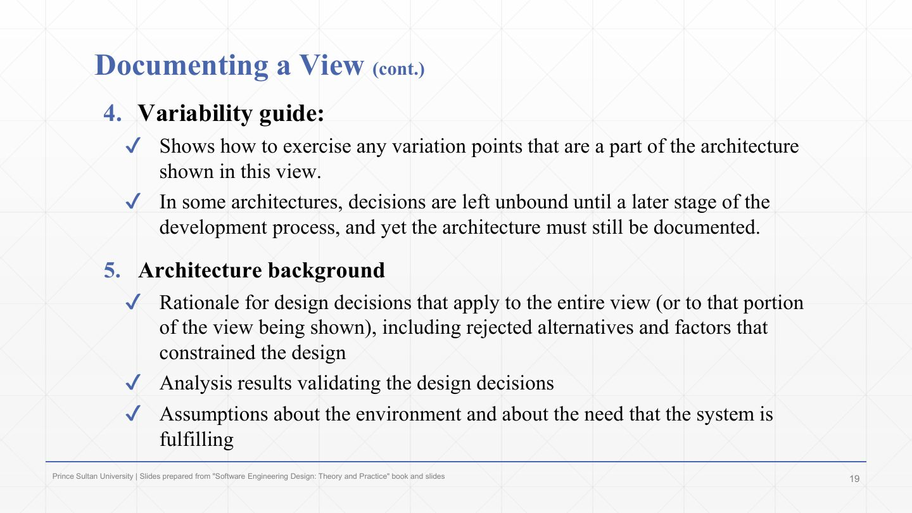
Part 4, the variability guide: shows how to use the variation points in this part of the architecture. Some decisions are deliberately left unbound until later (a configurable database, optional modules), yet the architecture must still be documented.
Part 5, the architecture background: the rationale for the design decisions in this view, including rejected alternatives and the factors that constrained the design; analysis results validating the decisions; and assumptions about the environment and the need the system fulfils.
List the parts used to document one architectural view.
(1) Primary presentation (usually a diagram with a key); (2) element catalog (elements, properties, relations, interfaces); (3) context diagram; (4) variability guide; (5) architecture background (rationale, analysis results, assumptions).
The part of a view’s documentation that explains the elements shown in the diagram is the:
A. Element catalog
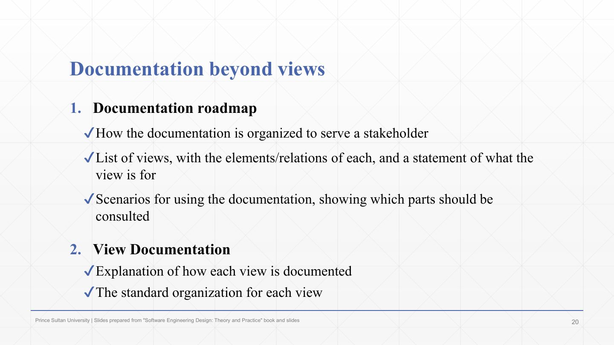
Beyond the views, part 1, the documentation roadmap: how the documentation is organised to serve each stakeholder, the list of views (their elements, relations and purpose), and scenarios for using the documentation (“to find X, read sections Y and Z”).
Part 2, view documentation: how each view is documented, i.e. the standard organisation every view follows.
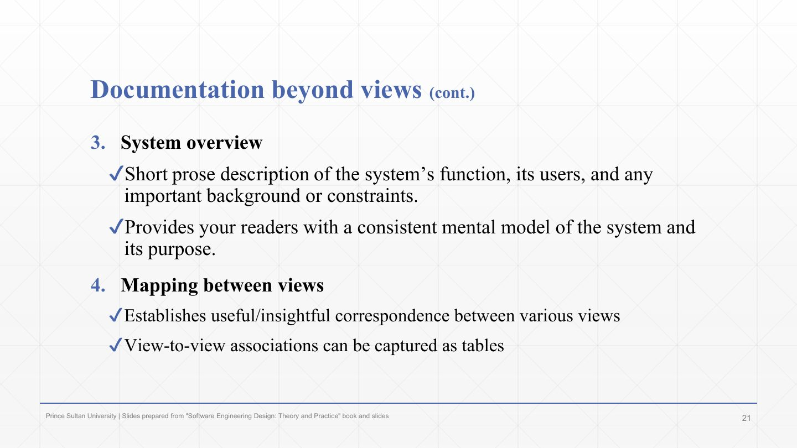
Part 3, the system overview: a short prose description of the system’s function, users, and important background or constraints, giving every reader the same mental model of the system and its purpose.
Part 4, the mapping between views: correspondences between elements in different views (this logical component runs as that process on that node), often as tables. Without mappings, views can quietly contradict each other.
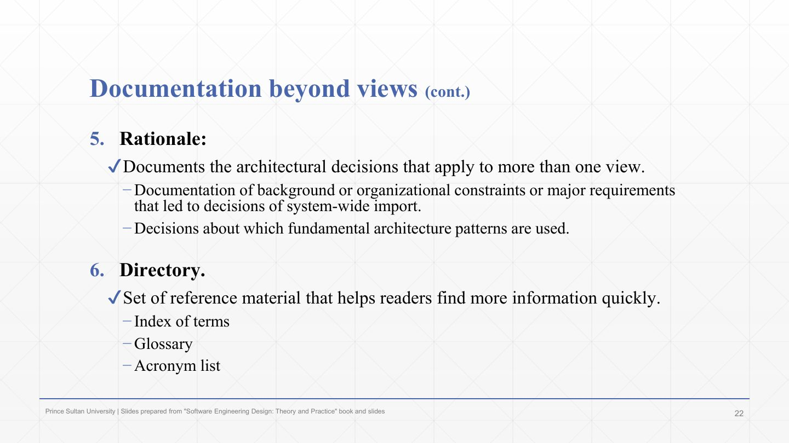
Part 5, the rationale: the architectural decisions that apply to more than one view: the background, organisational constraints or major requirements behind system-wide decisions, and the choice of the fundamental architecture patterns.
Part 6, the directory: reference material to find information quickly: an index of terms, a glossary and an acronym list.
List the six kinds of documentation that go beyond the individual views.
Documentation roadmap; view documentation (how each view is organised); system overview; mapping between views; rationale (cross-view decisions); directory (index, glossary, acronym list).
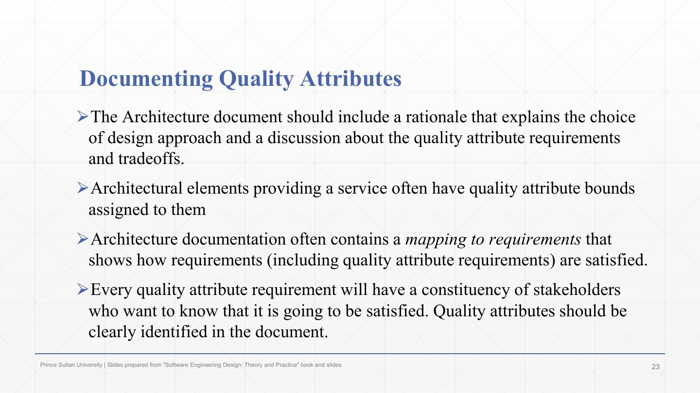
The document should include a rationale explaining the choice of design approach and discussing the quality-attribute requirements and their trade-offs.
Architectural elements that provide a service often have quality-attribute bounds assigned to them (Chapter 2’s quality tags: “≤ 100 ms per order”).
The documentation often contains a mapping to requirements showing how each requirement, including quality requirements, is satisfied.
Every quality requirement has a constituency of stakeholders who want to know it will be met, so quality attributes must be clearly identified in the document.
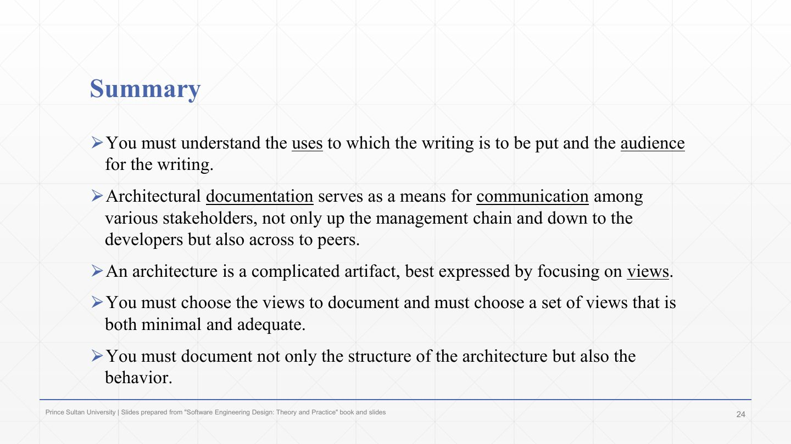
Understand the uses of the documentation and its audience before writing.
Architecture documentation is a means of communication among stakeholders: up to management, down to developers, and across to peers.
An architecture is complicated and is best expressed through views.
Choose a set of views that is both minimal and adequate.
Document the behaviour as well as the structure (e.g. sequence diagrams, not only component diagrams).
The outline again as a recap: why document, documenting a view, documenting beyond the views, documenting quality. This is the last chapter of SE322.